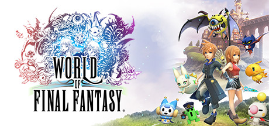

World of Final Fantasy é uma forma genial e descontraída de revisitar criaturas e personagens clássicos da franquia. O jogo aproveita essa nostalgia, mas também constrói uma identidade própria.
Uma evolução que dá espaço para experimentar
O sistema de evolução se destaca por funcionar como um tabuleiro. Nele, dá para liberar formas alternativas e seguir por diferentes caminhos. Uma forma menor pode acabar sendo mais útil do que uma versão gigante, então vale experimentar em vez de escolher sempre a criatura maior.
Nostalgia com personalidade
A narrativa é cheia de nostalgia, mas não depende só dela. Os dois irmãos são carismáticos e têm dilemas próprios, o que ajuda a dar personalidade à aventura. Os vilões são um pouco genéricos, mas continuam interessantes o bastante para não deixar a história maçante.
Os protagonistas também precisam lidar com os erros
O final me impressionou pela forma como responsabiliza diretamente os irmãos pelo que fizeram. O jogo não suaviza o erro nem o ignora só porque eles são os protagonistas. Eles são julgados e precisam aceitar que suas escolhas também podem trazer perdas.
O que ficou comigo
World of Final Fantasy me conquistou ao misturar personagens e criaturas conhecidas com uma aventura leve, mas que ainda leva a sério as decisões dos protagonistas. Também gostei de poder experimentar diferentes caminhos de evolução e descobrir que uma forma menor nem sempre é menos útil. É um jogo nostálgico, divertido e com personalidade própria.